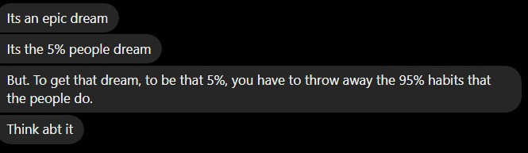

04 March 2025
a lifestyle change
recently i posted a story on my instagram, revealing some clues about my TRUE dream. well, someone actually cracked it, and they are really dear to me. but they made me realize a harsh truth about life that I must overcome if I were to achieve it. I don't want to stray away from the actual message so I have attached the actual message in jpg.
exact message from them
I realized that if I were to fulfill my ultimate dream, I would have to change my habits. So, I asked ChatGPT to generate me a daily schedule which I can work with. will try to follow it from now on. f#ck the 5% im gonna do what the 1% are doing. gonna make u proud.
(Wake at 8:00 AM, Sleep at 10:00 PM)
☀️ Morning Routine (8:00 – 10:00 AM)
8:00 – 9:00 AM – Gym / Running 🏋️
9:00 – 9:30 AM – Shower + Cool Down 🚿
9:30 – 10:00 AM – Breakfast 🍽️
📖 Deep Work Session (10:00 AM – 1:45 PM)
10:00 – 12:30 PM – Deep Work Block 1 💻 (Intense study/work session – No distractions!)
12:30 – 12:45 PM – Dog Walk 🐕
1:00 – 1:45 PM (sometimes till 2:00) – Lunch + Break 🍽️
📖 Afternoon Study / Work (2:00 – 5:00 PM)
2:00 – 3:30 PM – Deep Work Block 2 💻 (Focus session – coding, learning, or writing)
3:30 – 3:40 PM – Short Break (Stretch, Water, Walk) 🏃
3:40 – 4:50 PM – Deep Work Block 3 📚 (Final work session for the day)
🕰️ Free Time (5:00 – 6:00 PM) – NON-NEGOTIABLE
Socializing, relaxing, calling friends, YouTube, gaming, music, etc.
🌙 Evening Routine (6:00 – 10:00 PM)
6:00 – 7:30 PM – Side Project / Light Work 🛠️ (Animations, chess, GitHub, internships, etc.)
7:30 – 8:00 PM – Wind Down Before Dinner (Walk, relax, light reading, etc.)
8:00 – 8:45 PM – Dinner 🍽️
8:45 – 9:45 PM – Family Time (TV, Chill, No Laptop) 📺 (Sit with family, watch TV, no laptop use!)
9:45 – 10:00 PM – Journaling & Planning (Private, Phone or Notebook) ✍️
10:00 PM – Sleep 😴
sorry to bore you, but if you are reading this, I still do love you as a friend.
— utkarsh